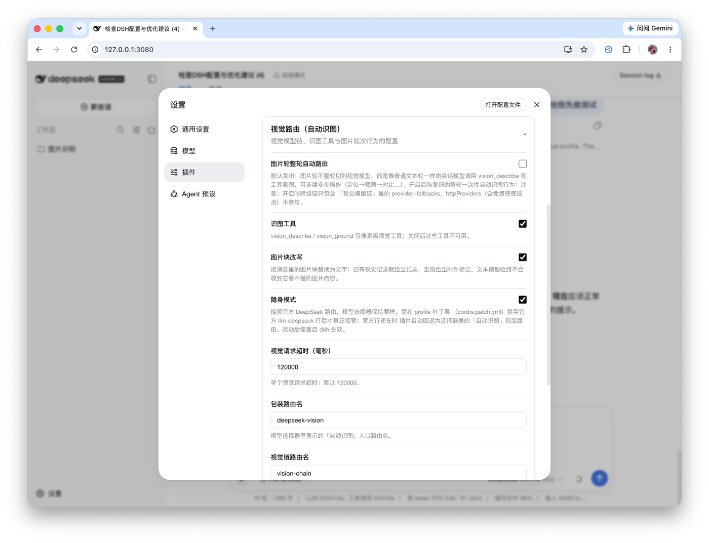

ROUTE A 01 / 02
保留原版的阅读秩序，只改变真正值得改善的比例、字体与作品画面。
A PERSONAL SITE, BUILT TO LAST 001
叶石瑞Shirui Ye.
学机械，也写软件。
喜欢把想法真正做出来。
西安交通大学机械类本科生。开发开源 Agent 工具，也在学习建模、装配与智能制造。这里记录一些做出来的东西，以及正在尝试的事情。
FIG. 01 — ACTUAL PROJECT INTERFACES+

VISION
ROUTER ↗
ROUTER ↗

01 / FROM THE REPO
看得见，也要能核对。
SCREENSHOTS, NOT A RENDER.VISION ROUTER — SOURCE ↗
01 / SELECTED WORK一段工作，
一段工作，
不必从零讲起。
Computer History / 已发布

ACTUAL APPLICATION UI · EXAMPLE ACTIVITY DATA
默认关闭采集、主动选择应用、本地 SQLite 存储。给工作上下文一个能找回来的位置，而不是一份不透明的监控记录。
完整项目案例 ↗VISUAL STUDY ONLY · ALL FEATURED IMAGES FROM EXISTING PROJECT FILES · 2026
ROUTE B 02 / 02
更自由的编辑式构图，个人身份与作品互相穿插；不靠大色块和模拟功能制造创意。
INDEPENDENT PROJECTS & FIELD NOTESXI'AN JIAOTONG UNIVERSITY / 2026
STUDYBUILDDOCUMENT
WHAT I MAKE / 001让工具
看得见。VISION ROUTER ↗
看得见。VISION ROUTER ↗
SELECTED / 02工作会继续。
工作会继续。
记录也应该。
COMPUTER HISTORYRELEASED · LOCAL-FIRST
RELEASED SOFTWARE / COMPUTER HISTORY
不是记住
一切。
而是找回线索。
电脑工作线索散落在编辑器、终端和文件里。这个工具仅在主动开启后记录有限元数据，在本地组织成可以继续工作的上下文。
- PRIVACY
- Default off, app opt-in
- STORAGE
- Local SQLite
两条路线都是设计研究，不是完整网站。项目画面来自现有真实仓库；没有新增虚构的机械成果、演示功能或性能数据。
对照正式原版 ↗